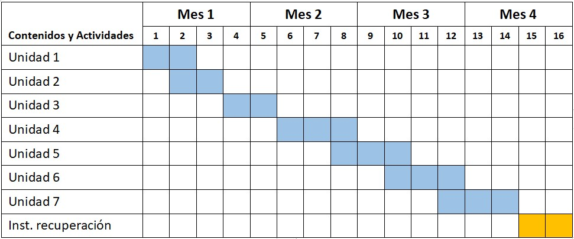

FUNDAMENTACIÓN
La estadística es una disciplina fundamental en el campo de la gestión y administración de empresas, ya que proporciona las herramientas necesarias para recolectar, organizar, analizar e interpretar datos. A través de la estadística, es posible tomar decisiones informadas, identificar patrones y tendencias, y evaluar el rendimiento de las organizaciones.
La asignatura de Estadística para la Carrera de Técnico Superior en Gestión y Administración de Empresas tiene como objetivo principal brindar a los estudiantes los conocimientos teóricos y prácticos necesarios para utilizar correctamente las técnicas estadísticas en el ámbito empresarial. Se busca que los estudiantes adquieran habilidades para recolectar datos, construir distribuciones de frecuencias, representar gráficamente los datos, calcular medidas de tendencia central y dispersión, realizar inferencias estadísticas y utilizar herramientas de análisis estadístico en la toma de decisiones.
El enfoque de la asignatura se basa en la resolución de problemas prácticos y la aplicación de los conceptos estadísticos a situaciones reales en el ámbito empresarial. Los estudiantes aprenderán a utilizar técnicas estadísticas adecuadas para analizar datos y obtener conclusiones significativas. Además, se fomentará el pensamiento crítico y la capacidad de interpretar y comunicar los resultados de manera efectiva.
OBJETIVOS
Generales:
- Proporcionar a los estudiantes los fundamentos teóricos de la estadística y su aplicabilidad en el ámbito empresarial.
- Desarrollar habilidades prácticas en la recolección, organización y análisis de datos.
- Fomentar el pensamiento crítico y analítico para la toma de decisiones basada en datos.
Específicos:
Al finalizar la asignatura, los estudiantes serán capaces de:
- Comprender los conceptos fundamentales de la Estadística y reconocer su utilidad en el ámbito empresarial y de gestión.
- Diferenciar y definir variables cualitativas y cuantitativas, y comprender cómo se aplican en el análisis estadístico.
- Utilizar el método estadístico adecuadamente para recolectar, organizar y analizar datos relevantes en el contexto empresarial.
- Construir y analizar distribuciones de frecuencias para variables discretas y continuas, utilizando tablas y gráficos adecuados.
- Calcular medidas de tendencia central (como la media, mediana y moda) y medidas de dispersión o variabilidad (como el rango, desviación media, varianza, desviación estándar y coeficiente de variación) para describir y resumir conjuntos de datos.
- Aplicar medidas de posición (como percentiles y cuartiles) para evaluar la ubicación relativa de los datos dentro de una distribución.
- Comprender los conceptos de covarianza y correlación, y utilizarlos para analizar la relación entre variables cuantitativas.
- Diferenciar entre población y muestra, y aplicar técnicas de muestreo para obtener conclusiones estadísticas válidas y confiables.
- Desarrollar habilidades para recolectar y organizar datos relevantes en el contexto de organizaciones públicas provinciales, y aplicar técnicas estadísticas para su análisis y presentación.
- Utilizar el cálculo de probabilidades para evaluar eventos inciertos y tomar decisiones informadas en el ámbito empresarial.
- Comprender y aplicar diferentes distribuciones de probabilidad, como la distribución binomial y la distribución normal, en situaciones empresariales específicas.
- Aplicar técnicas de estimación de parámetros y pruebas de hipótesis para realizar inferencias estadísticas sobre poblaciones y tomar decisiones basadas en evidencia.
- Comprender y utilizar técnicas de ponderación en el análisis estadístico para tener en cuenta factores de influencia y obtener resultados más precisos y representativos.
- Desarrollar habilidades prácticas en el uso de software estadístico y herramientas tecnológicas para realizar análisis y presentación de datos de manera eficiente y efectiva.
- Aplicar los conceptos y herramientas de la Estadística en la resolución de casos prácticos y situaciones reales en el ámbito empresarial y de gestión.
CONTENIDOS
Unidad 1: Introducción a la Estadística
- Concepto de Estadística y su importancia en el ámbito empresarial.
- Variables estadísticas: cualitativas y cuantitativas.
- Tipos de datos y escalas de medición.
- Fuentes de datos y métodos de recolección.
Unidad 2: Organización y presentación de datos
- Tablas de frecuencia y gráficos estadísticos.
- Medidas de tendencia central: media, mediana y moda.
- Medidas de dispersión: rango, desviación media, varianza, desviación estándar y coeficiente de variación.
- Representación gráfica de datos: histogramas, diagramas de caja y bigotes, diagramas de dispersión.
Unidad 3: Probabilidad
- Concepto de probabilidad y su interpretación.
- Reglas básicas de probabilidad.
- Probabilidad condicional e independencia.
- Distribuciones de probabilidad: binomial, poisson y normal.
Unidad 4: Muestreo y estimación
- Población y muestra: conceptos y características.
- Técnicas de muestreo: aleatorio simple, estratificado, por conglomerados.
- Estimación puntual y por intervalo.
- Error muestral y nivel de confianza.
Unidad 5: Inferencia estadística
- Pruebas de hipótesis: conceptos básicos y formulación.
- Tipos de errores y nivel de significancia.
- Pruebas de hipótesis para la media y proporción poblacional.
- Análisis de varianza (ANOVA).
Unidad 6: Análisis de correlación y regresión
- Covarianza y coeficiente de correlación.
- Análisis de correlación lineal.
- Regresión lineal simple y múltiple.
- Interpretación de resultados y predicciones.
Unidad 7: Aplicaciones de la Estadística en la gestión empresarial
- Aplicación de la Estadística en la toma de decisiones empresariales.
- Control de calidad y mejora continua.
- Investigación de mercados y análisis de datos de clientes.
- Planificación y control de proyectos.
ESTRATEGIA METODOLÓGICA
La estrategia metodológica de la asignatura de Estadística se basa en un enfoque teórico-práctico, en el que se busca que los estudiantes comprendan los conceptos teóricos y luego los apliquen en situaciones problemáticas.
Para lograr esto, se llevarán a cabo explicaciones teóricas que permitirán a los estudiantes conocer los conceptos y las herramientas estadísticas necesarias para resolver problemas. Estas explicaciones estarán apoyadas por ejemplos concretos y la realización de ejercicios en clase.
Una vez que se ha abordado el contenido teórico, se plantean situaciones problemáticas en las que cada estudiante deberá aplicar los conocimientos adquiridos hasta el momento para resolver problemas concretos. De esta manera, se busca que los estudiantes se involucren activamente en el proceso de aprendizaje y que puedan poner en práctica lo que han aprendido en un contexto real.
Además, se fomentará la participación activa de los estudiantes en clase, mediante la discusión de problemas y la resolución de ejercicios en grupo. También se realizarán ejercicios prácticos en el aula, para que los estudiantes puedan aplicar de forma inmediata los conceptos aprendidos y puedan resolver dudas que surjan en el proceso.
Por último, se busca que los estudiantes puedan comparar su proceso de resolución, resultados e interpretación con el proceso que se explicará en clase, de manera que puedan comprender mejor los conceptos y corregir posibles errores en su razonamiento matemático. De esta forma, se pretende que los estudiantes se sientan más seguros al aplicar los conocimientos adquiridos en situaciones reales de su futuro ejercicio profesional.
EVALUACIÓN Y ACREDITACIÓN
La evaluación se realizará a través de la solución y defensa de trabajos prácticos individuales.
Para la acreditación de Estudiantes Regulares se tendrá en cuenta los siguientes criterios:
Promoción de la asignatura: el estudiante deberá obtener un promedio en los diferentes trabajos prácticos igual o superior a 8 (ocho) con una asistencia como mínimo del 80 % a las clases. De esta manera no rendirá examen final.
Aprobación de cursada: el estudiante deberá obtener un promedio en los diferentes trabajos prácticos como mínimo de 6 (seis) y con una asistencia como mínimo del 70 % a las clases. De esta manera tendrá acceso a rendir un examen final.
No aprobación de cursada: los estudiantes que acrediten una nota inferior a 6 (seis) no se les dará por aprobada la cursada y tendrán la posibilidad de rendir la asignatura en forma libre.
CRONOGRAMA PROPUESTO
BIBLIOGRAFÍA
Principal:
- Flores Gaxiola, J., & Flores López, J. L. (2016). Estadística Descriptiva y Probabilidad. Pearson Educación.
- Newbold, P., Carlson, W. L., & Thorne, B. (2013). Estadística para Administración y Economía. Pearson Educación.
- Webster, A. (2014). Estadística Aplicada a los Negocios y la Economía. McGraw Hill.
Comlementaria:
- Seber, G. A. F., & Lee, A. J. (2006). Estadística para Investigadores: Introducción al Diseño y Análisis de Datos. Reverte.
- Wackerly, D. D., Mendenhall III, W., & Scheaffer, R. L. (2008). Estadística Matemática con Aplicaciones. Cengage Learning.
- Montgomery, D. C., & Runger, G. C. (2010). Probabilidad y Estadística para Ingenieros. Cengage Learning.
- De Veaux, R. D., Velleman, P. F., & Bock, D. E. (2019). Estadística para Ciencias Sociales. Pearson Educación.
- Gómez Villegas, M. (2011). Estadística Descriptiva. Ediciones Díaz de Santos.
- Moore, D. S., Notz, W. I., & Fligner, M. A. (2014). Métodos Estadísticos. Cengage Learning.